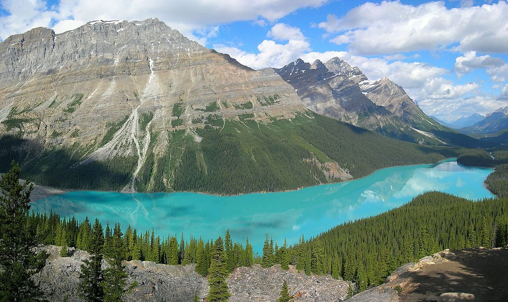
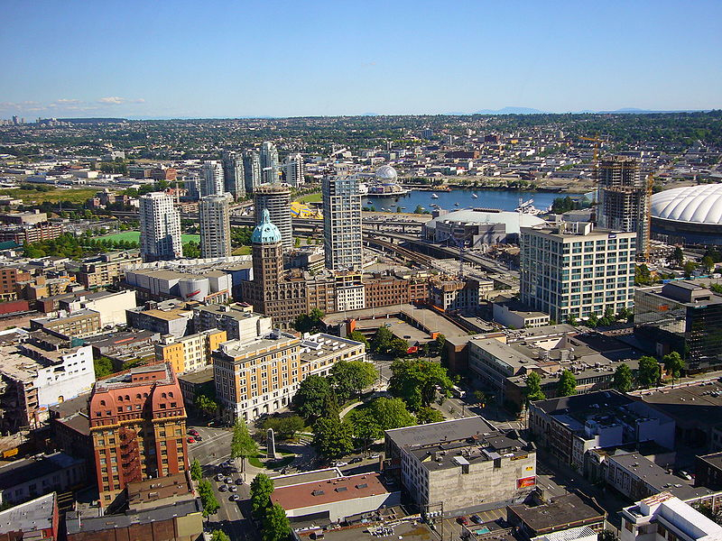

Ontdek—Canada!
 Canada is een land in het noorden van Noord-Amerika. In het zuiden wordt het door de Verenigde Staten begrensd en in het oosten door de Atlantische Oceaan. De westelijke grens wordt gevormd door de Amerikaanse staat Alaska en de Grote Oceaan, en in het noorden ligt de Noordelijke IJszee. De hoofdstad van Canada is Ottawa en de grootste steden zijn Toronto, Montreal, Vancouver en Calgary. Canada is met een oppervlakte van 9.984.670 km² op Rusland na het grootste land ter wereld. (wikipedia)
| Rankschikking | Naam | Provincie | Bevolking | |
|---|---|---|---|---|
| 1. | Toronto | Ontario | 5,928,040 | |
|  | 2. | Montreal | Quebec | 4,098,927 |
| 3. | Vancouver | British Columbia | 2,463,431 |
Toronto—Tot rust komen in High Park.
Dit is het grootste aangelegde park van de stad, een heerlijke plek om te wandelen en te picknicken. Verspreid over het park zijn daarvoor verschillende plekken voorbehouden en op mooie dagen komen hele families hier verpozing zoeken. Droom weg bij de oevers van het meer en bewonder de verschillende waterpartijen die je tijdens je wandeling tegenkomt. Er is een restaurant, een kleine zoo en 's zomers worden er theatervoorstellingen georganiseerd. (reisforum.net)
Montreal—Beklim Mont-Royal
Vanaf de heuvel Mont-Royal heb je een mooi uitzicht over Montreal. In het park kun je ’s zomers chillen en ’s winters sleeën. Minpuntje: het grote kruis op Mont-Royal lijkt net een stelling. Een teleurstelling. (shirley.digital)
Vancouver—Capilano Suspension Bridge
De meest spectaculaire wandeling in Vancouver is gelegen boven de Capilano River. De honderdveertig meter lange hangbrug werd voor het eerst geplaatst in 1889 naar een idee van George Grant Mackay. In het jaar 1956 werd de brug volledig vernieuwd. Nu kun je er wandelingen maken over maar liefst zeven verschillende loopbruggen. In het bijbehorende park ‘Capilano River Regional Park’ kun je vervolgens verschillende ecotours volgen, genieten van tentoonstellingen en de bijzondere totempalen bewonderen. Ook de nabij gelegen Cleveland Dam is een bezienswaardigheid op zich. Het water dendert hier met hoge snelheden naar beneden, waarna een deel gezuiverd wordt als drinkwater. (vancouvervoorbeginners.nl)